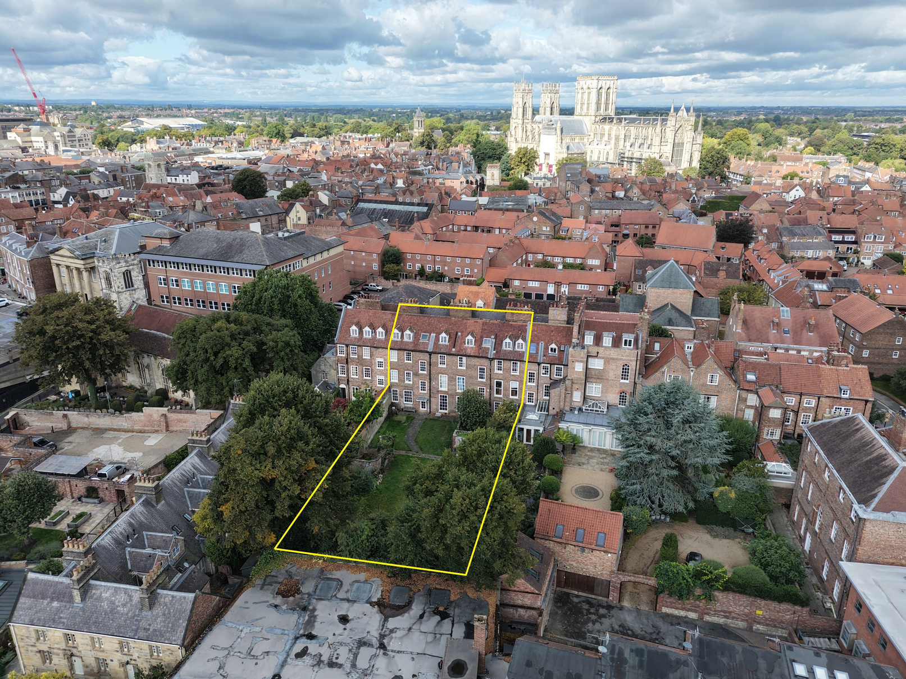
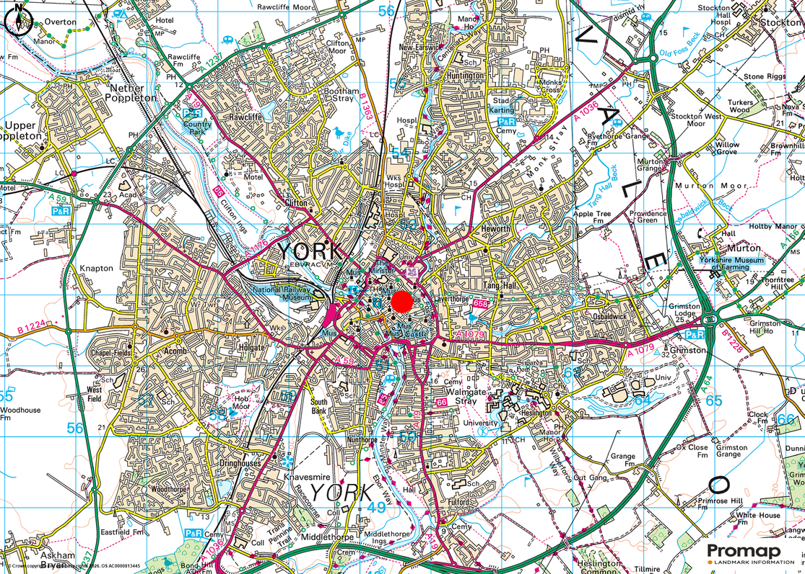
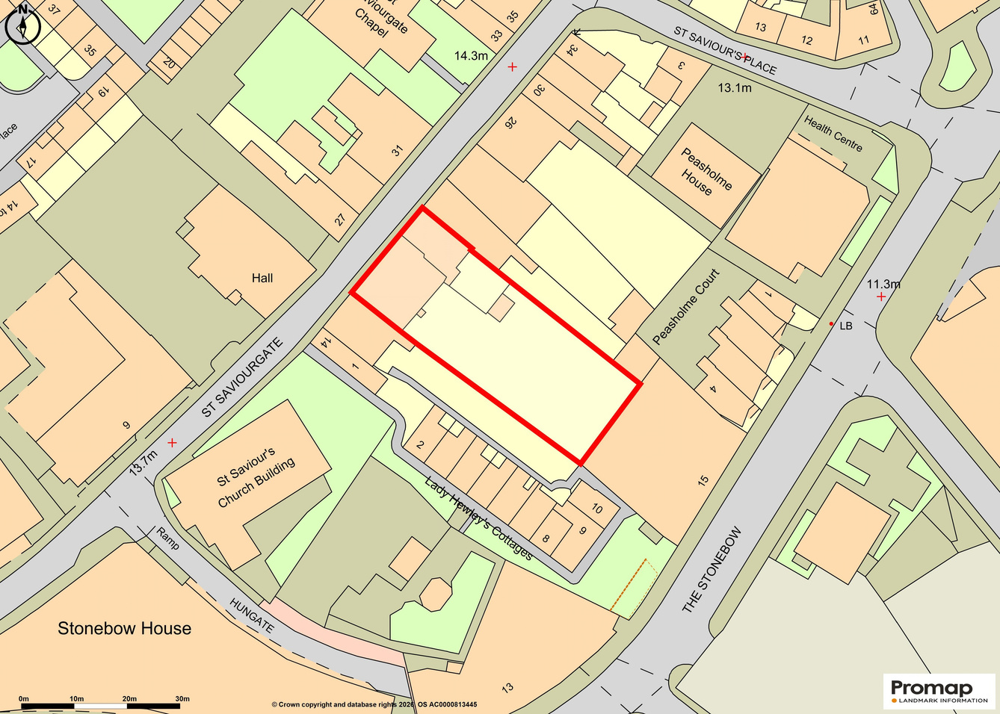
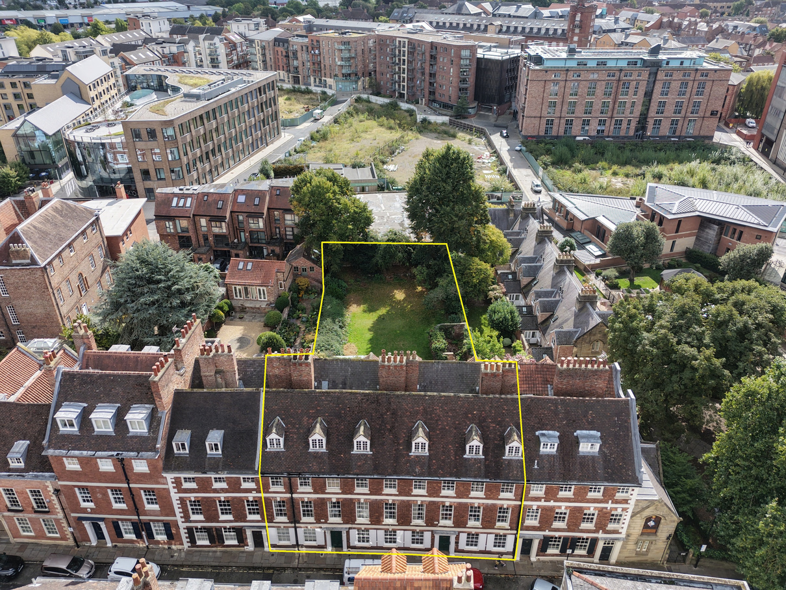
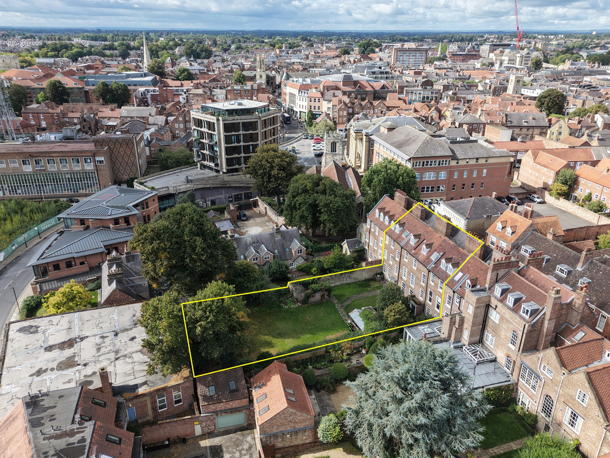
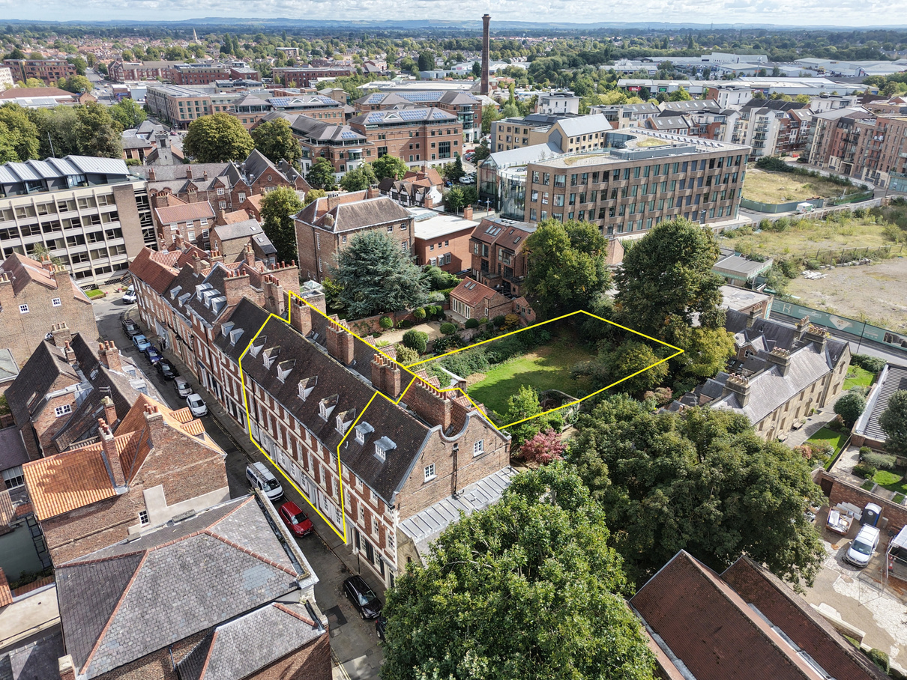

Curwen Group · Nursery Opportunity · First Draft
18 & 20
St Saviourgate
York, YO1 8NS
A Georgian setting for a new early years destination. Two connected townhouses and a substantial south-facing walled garden within York’s historic city walls.
Approximate net area
Approximate total site
Georgian townhouses
Existing walled garden
Proposed nursery conversion, subject to feasibility, necessary consents and registration. Existing property photographs shown.
01 - Executive Summary
A distinctive nursery opportunity in the heart of York.
Dating from circa 1740, 18 and 20 St Saviourgate combine period architecture with an unusually generous walled garden for a city-centre property. Originally two private homes, the buildings were combined into a single office in 1974.
The proposed vision is a characterful day nursery, with welcoming arrival spaces, carefully planned age-group rooms and a garden-led approach to outdoor learning. The arrangement across basement, ground and three upper floors requires an operator-led layout and access strategy before capacity can be established.
The property is currently occupied by an office tenant. Nursery occupation, delivery timing and commercial terms remain to be established.
| Address | 18 & 20 St Saviourgate, York YO1 8NS |
|---|---|
| Buildings | Two connected Georgian townhouses |
| Current use | Offices; Class E as stated in the source brochure |
| Tenure | Freehold offered for sale by informal tender |
| Occupancy | Let to Harland & Co Solicitors Limited |
| Outdoor setting | South-facing walled garden; area not supplied |
| Parking | No allocated parking; on-street permits available on St Saviourgate, per owner information |
02 - Property & Accommodation
A substantial building with scope for a considered conversion.
The selling brochure quotes approximately 7,114 sq ft net (660.9 sq m) across both properties. This is an existing office measurement, rather than usable childcare space. A measured survey and proposed nursery layout are needed to establish the operational area.
| Floor | No. 18 · sq ft | No. 20 · sq ft | Combined · sq ft |
|---|---|---|---|
| Basement | 446 | 15 | 461 |
| Ground | 1,159 | 492 | 1,651 |
| First | 1,264 | 507 | 1,771 |
| Second | 1,222 | 505 | 1,727 |
| Third | 1,053 | 451 | 1,504 |
| Total | 5,144 | 1,970 | 7,114 |
Square-foot figures transcribed from the Savills schedule. Its square-metre entries contain inconsistencies with the stated totals; all areas remain approximate and subject to survey. The 0.26-acre figure is the whole site, not the garden area.
03 - Availability & Terms
Freehold opportunity. Nursery terms to be developed.
The property is offered for sale by informal tender, with offers invited. The selling particulars report an existing annual office rent of £60,000 from Harland & Co Solicitors Limited. This is the current office tenancy income and is not a proposed nursery rent.
A copy of the existing lease and technical information can be requested from the selling agent. The vendor reserves the right to charge VAT. Viewings are strictly by appointment.
| Sale basis | Freehold; informal tender |
|---|---|
| Price | Offers invited; no asking price quoted |
| Existing rent | £60,000 per annum - office tenancy |
| Possession | Tenant in situ; nursery occupation timing to be agreed |
| Nursery lease / operator | Not agreed or supplied |
| Nursery capacity | To be established through feasibility and registration |
04 - Location & Access
Inside the city walls. Connected to the city beyond.
St Saviourgate is a Georgian street in central York, approximately 0.25 miles south-east of York Minster and 0.8 miles east of York Railway Station, according to the selling brochure. Nearby uses include homes, offices, the Central Methodist Church and DIG archaeological museum.
There is no allocated parking. Permits can be obtained for on-street parking on St Saviourgate, as advised by the owner. Permit eligibility and arrangements should be confirmed when preparing the nursery access plan; a permit does not reserve a space.
The nursery design should establish a practical parent handover, buggy storage, deliveries and staff travel arrangement, taking account of the street setting and neighbouring residential properties.

05 - Site & Setting
Two townhouses. One garden-led vision.


The source brochure describes a site of approximately 0.26 acres (0.105 hectares), including the buildings and garden. Boundary markings are indicative. The Grade II* listing and historic fabric should inform the conversion design from the outset.
06 - Proposed Nursery Interiors
A calm, characterful early years environment.
The following spaces describe a proposed design brief. No nursery layout, internal photographs or room capacities were supplied. CGI should be developed around a measured survey, retaining the character of the listed buildings and showing a realistic arrangement.
Reception & parent handover
Create a welcoming, controlled entrance with space for parent handover and buggy storage. Show retained Georgian character where supported by the survey.
Baby room & sleep space
A calm nurturing room with a proposed sleep area and age-appropriate facilities; location and configuration to be established.
Toddler & preschool rooms
Flexible play, reading and creative activity zones, with circulation and access designed around the eventual floor plan.
Proposed nursery floor plan
A measured plan is needed to show rooms, age groups, toilets, staff facilities, escape routes and the connection to outdoor play.
07 - Outdoor Learning

A walled garden with outdoor learning potential.
The existing garden is one of the property’s strongest features. A nursery scheme could explore nature play, growing, creative activities and quieter sheltered areas within this established city-centre setting.
The usable play area, access from the childcare rooms, levels, trees and boundary security need to be assessed. The garden has not been measured separately, and the existing photographs show its current condition.
Proposed outdoor learning garden
Create a garden CGI showing age-appropriate play and planted areas, based on a surveyed layout and a realistic proposal.
08 - Existing Property Gallery
The property as it stands today.


09 - Next Stage
From opportunity to a workable nursery proposal.
Confirm the existing tenancy and route to occupation, commission a measured survey and develop a nursery feasibility layout. Establish the appropriate consent route for the proposed works and use, alongside the requirements for registration, access and safe operation.
Capacity, fit-out budget, programme and nursery commercial terms can then be developed against the agreed layout. No operator commitment, registered places, opening date or forecast return is assumed in this draft.
Proposed nursery frontage
A street-level CGI is needed to show the proposed entrance, discreet signage and arrival experience. No street-level photograph was included in the source brochure.
10 - Enquiries
Explore the St Saviourgate nursery opportunity.
For further information or to discuss the proposed nursery conversion, contact Curwen Group.
dan@curwengroup.co.ukFirst draft · November 2026
Property facts, photographs and maps are drawn from the Savills sales brochure dated November 2026. Parking information was supplied separately by the owner. Nursery descriptions are proposals for discussion.
Areas and distances are approximate. This draft does not form an offer or contract. Nursery suitability, occupation, consents, registration and commercial terms remain to be confirmed. Existing aerial photographs and map boundaries are for identification only. Maps reproduced from the supplied brochure: © Crown copyright, licence 100022432 Savills (UK) Ltd. Image and map reuse permissions should be confirmed before public issue.